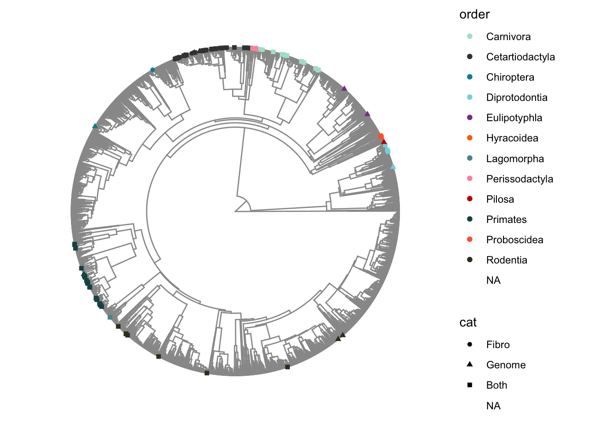
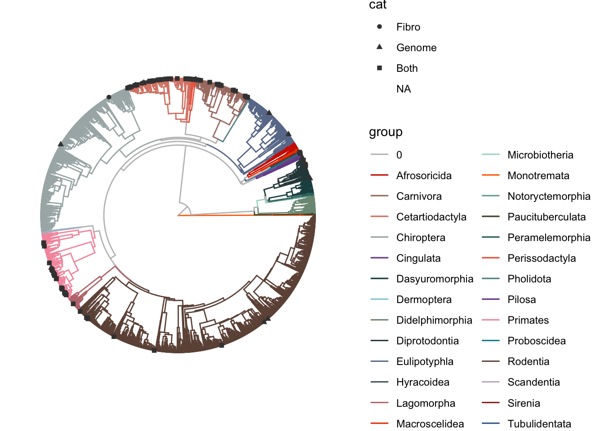
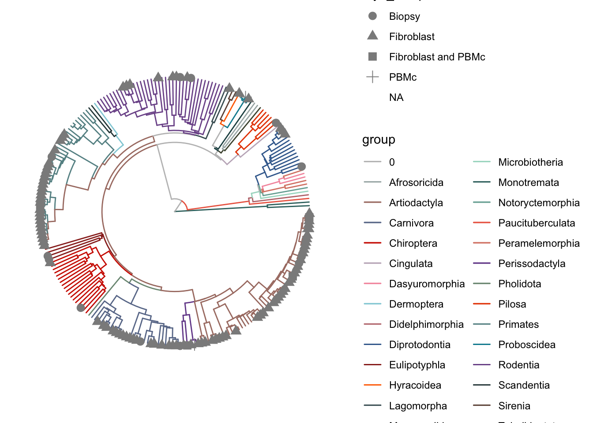
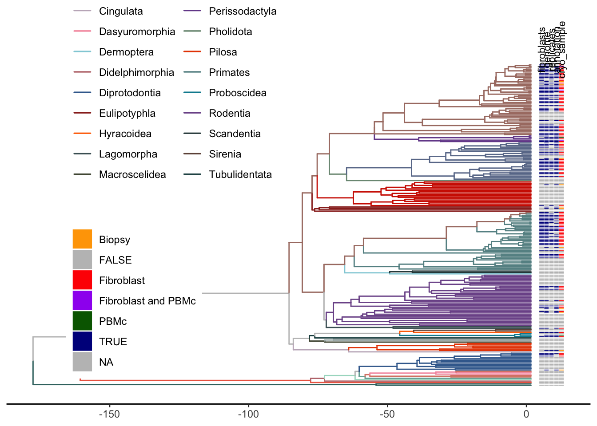
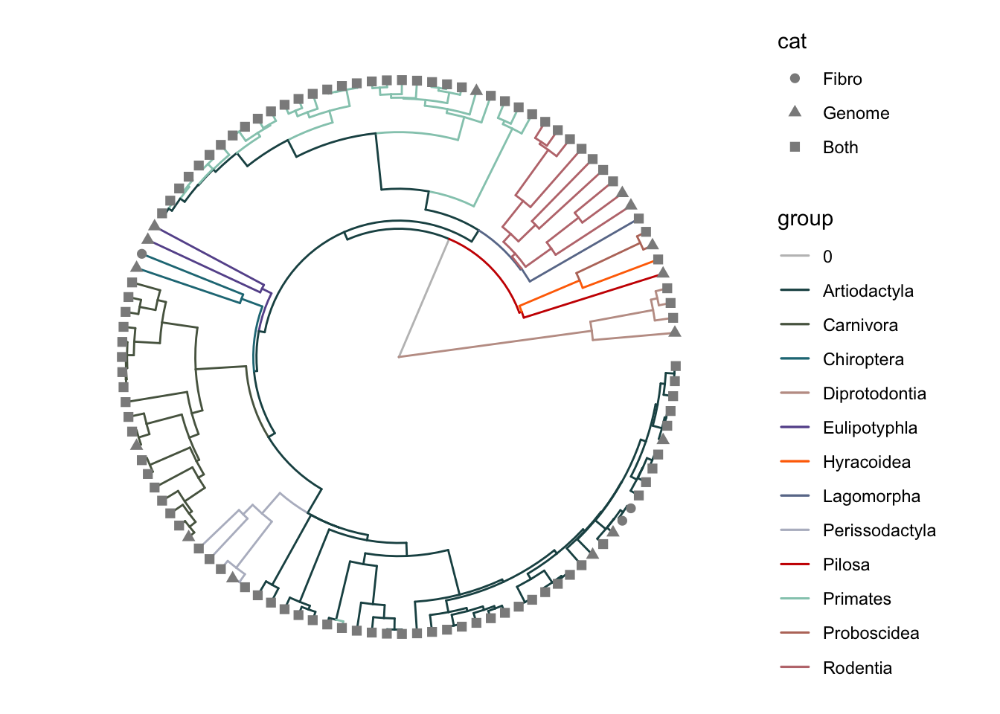
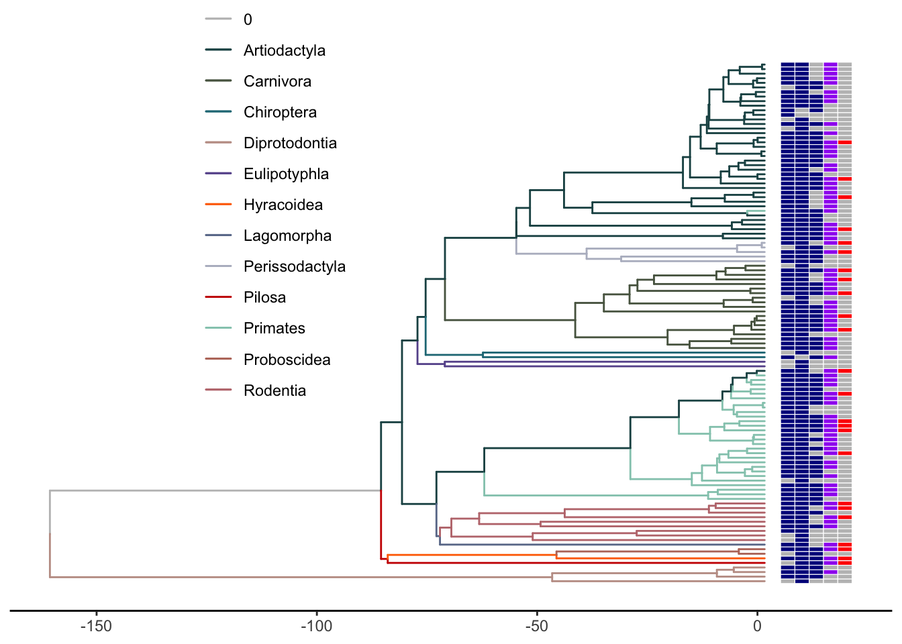

Last updated: 2026-07-09
Checks: 7 0
Knit directory: 1.Species_selection/
This reproducible R Markdown analysis was created with workflowr (version 1.7.2). The Checks tab describes the reproducibility checks that were applied when the results were created. The Past versions tab lists the development history.
Great! Since the R Markdown file has been committed to the Git repository, you know the exact version of the code that produced these results.
Great job! The global environment was empty. Objects defined in the global environment can affect the analysis in your R Markdown file in unknown ways. For reproduciblity it’s best to always run the code in an empty environment.
The command set.seed(20221125) was run prior to running
the code in the R Markdown file. Setting a seed ensures that any results
that rely on randomness, e.g. subsampling or permutations, are
reproducible.
Great job! Recording the operating system, R version, and package versions is critical for reproducibility.
Nice! There were no cached chunks for this analysis, so you can be confident that you successfully produced the results during this run.
Great job! Using relative paths to the files within your workflowr project makes it easier to run your code on other machines.
Great! You are using Git for version control. Tracking code development and connecting the code version to the results is critical for reproducibility.
The results in this page were generated with repository version bc97d32. See the Past versions tab to see a history of the changes made to the R Markdown and HTML files.
Note that you need to be careful to ensure that all relevant files for
the analysis have been committed to Git prior to generating the results
(you can use wflow_publish or
wflow_git_commit). workflowr only checks the R Markdown
file, but you know if there are other scripts or data files that it
depends on. Below is the status of the Git repository when the results
were generated:
Ignored files:
Ignored: .DS_Store
Ignored: .RData
Ignored: .Rhistory
Ignored: .Rproj.user/
Ignored: Cryozoo_clean.gsheet
Ignored: Sample_selection_ongoing.gsheet
Ignored: all_species_selection.gsheet
Ignored: analysis/Update_Sample_table.nb.html
Ignored: analysis/goat_cache/
Ignored: analysis/update_Cell_culture.nb.html
Ignored: analysis/update_Cryostock.nb.html
Ignored: analysis/update_Extractions.nb.html
Ignored: analysis/update_Sequencing.nb.html
Ignored: selected_species_assays_Fixed_LK.gsheet
Untracked files:
Untracked: .Rprofile
Untracked: .gitattributes
Untracked: Cryozoo_project.Rproj
Untracked: README.md
Untracked: _workflowr.yml
Untracked: analysis/Clean_CryoZoo_Lists.Rmd
Untracked: analysis/README.md
Untracked: analysis/archive/
Untracked: analysis/plot_trees_simple.R
Untracked: archive/
Untracked: code/
Untracked: data/
Untracked: output/
Untracked: selected_species.csv
Untracked: selected_species_short.csv
Untracked: selection_best_genomes.csv
Note that any generated files, e.g. HTML, png, CSS, etc., are not included in this status report because it is ok for generated content to have uncommitted changes.
These are the previous versions of the repository in which changes were
made to the R Markdown (analysis/plot_Tree_mammal.Rmd) and
HTML (docs/plot_Tree_mammal.html) files. If you’ve
configured a remote Git repository (see ?wflow_git_remote),
click on the hyperlinks in the table below to view the files as they
were in that past version.
| File | Version | Author | Date | Message |
|---|---|---|---|---|
| Rmd | bc97d32 | Luca Wange | 2026-07-09 | Publish analysis |
| Rmd | 717f83e | Luca Wange | 2026-07-09 | Host with GitHub. |
| Rmd | a22d48b | Luca Wange | 2026-06-12 | Overhaul analysis scripts and add simple tree plotting script |
##
library(tidyverse)── Attaching core tidyverse packages ──────────────────────── tidyverse 2.0.0 ──
✔ dplyr 1.2.1 ✔ readr 2.2.0
✔ forcats 1.0.1 ✔ stringr 1.6.0
✔ ggplot2 4.0.3 ✔ tibble 3.3.1
✔ lubridate 1.9.5 ✔ tidyr 1.3.2
✔ purrr 1.2.2
── Conflicts ────────────────────────────────────────── tidyverse_conflicts() ──
✖ dplyr::filter() masks stats::filter()
✖ dplyr::lag() masks stats::lag()
ℹ Use the conflicted package (<http://conflicted.r-lib.org/>) to force all conflicts to become errorslibrary(cowplot)
Attaching package: 'cowplot'
The following object is masked from 'package:lubridate':
stamplibrary(treedataverse)── Attaching packages ─────────────────────────────────── treedataverse 0.0.1 ──
✔ ape 5.8.1 ✔ ggtree 4.2.0
✔ tidytree 0.4.8 ✔ ggtreeExtra 1.22.1
✔ treeio 1.36.1 Warning: package 'tidytree' was built under R version 4.6.1── Conflicts ────────────────────────────────────── treedataverse_conflicts() ──
✖ treeio::drop.tip() masks tidytree::drop.tip(), ape::drop.tip()
✖ ggtree::expand() masks tidyr::expand()
✖ tidytree::filter() masks dplyr::filter(), stats::filter()
✖ tidytree::keep.tip() masks ape::keep.tip()
✖ dplyr::lag() masks stats::lag()
✖ ggtree::rotate() masks ape::rotate()
✖ ape::where() masks dplyr::where()library(magrittr)
Attaching package: 'magrittr'
The following object is masked from 'package:ggtree':
inset
The following object is masked from 'package:purrr':
set_names
The following object is masked from 'package:tidyr':
extractlibrary(RColorBrewer)
library(readxl)
library(googlesheets4)
## plotting options
theme_set(theme_bw())
here::here()[1] "/Users/lucas/Library/CloudStorage/GoogleDrive-lucasesteban.wange@upf.edu/My Drive/Projects/Cryozoo/1.Species_selection"#path<-here::here()
path<-here::here()big_tree<-drop.tip(read.nexus(paste0(path,"/data/MamPhy_fullPosterior_BDvr_DNAonly_4098sp_topoFree_NDexp_MCC_v2_target.tre")),"_Anolis_carolinensis")
summary_species<-readRDS(paste0(path,"/output/Species_List_with_genome_and_cl_info2.rds")) %>%
filter(class=="Mammalia") %>%
filter(!duplicated(species)) %>%
mutate(cryo_sample=case_when(cell_line=="Fibro/PBMc"~"Fibroblast and PBMc",
cell_line=="Fibro"~"Fibroblast",
cell_line=="PBMc"~"PBMc",
cell_line=="No cell line"~"Biopsy")
)
species_selection<- read_sheet(
"https://docs.google.com/spreadsheets/d/1k-0sFR4AuaA0hAM2qeUZ8IMvLx96vY2JIQbwrNQtLj0/edit?usp=drive_link"
) %>%
arrange(-silencer, -illumina, species) %>%
select(silencer, illumina, species)! Using an auto-discovered, cached token. To suppress this message, modify your code or options to clearly consent to
the use of a cached token. See gargle's "Non-interactive auth" vignette for more details: <https://gargle.r-lib.org/articles/non-interactive-auth.html>ℹ The googlesheets4 package is using a cached token for
'lucasesteban.wange@upf.edu'.Auto-refreshing stale OAuth token.✔ Reading from "selected_species_assays_Fixed_LK".✔ Range 'selected_species'.summary_species<-summary_species %>% left_join(species_selection) Joining with `by = join_by(species, silencer, illumina)`tree_meta <- data.frame(label=big_tree$tip.label) %>%
separate(col = label,sep = "_",into = c("s1","s2","family","order"),remove = F) %>%
unite(c(s1,s2),col = "species_",sep = "_") %>%
mutate(family=str_to_title(family),
order=str_to_title(order))
table(summary_species$species_ %in% tree_meta$species_)
FALSE TRUE
8 108 summary_species[!(summary_species$species_ %in% tree_meta$species_),]# A tibble: 8 × 81
scientific_name species subspecies subfamily cites_annex iucn_category
<chr> <chr> <chr> <chr> <chr> <chr>
1 Notamacropus rufogrise… Notama… <NA> <NA> - LEAST CONCERN
2 Osphranter rufus Osphra… <NA> <NA> - LEAST CONCERN
3 Equus przewalskii Equus … <NA> <NA> I ENDANGERED
4 Otaria byronia Otaria… <NA> <NA> - LEAST CONCERN
5 Aonyx cinereus Aonyx … <NA> <NA> I VULNERABLE
6 Hydrictis maculicollis Hydric… <NA> <NA> <NA> NEAR THREATE…
7 Cercocebus lunulatus Cercoc… <NA> <NA> II ENDANGERED
8 Hexaprotodon liberiens… Hexapr… <NA> <NA> II ENDANGERED
# ℹ 75 more variables: individuals <dbl>, sex <chr>, superclass <fct>,
# cell_line <fct>, karyotype <chr>, dna <chr>, rna <chr>,
# wgs_sequencing <chr>, rna_seq <chr>, i_psc <chr>, tissue_of_origin <chr>,
# alternative_name <chr>, species_ <chr>, taxon_id <chr>, synonym <chr>,
# tolid_prefix <chr>, assembly_id <chr>, assembly_name <chr>,
# genbank_accession <chr>, refseq_accession <chr>, genus <chr>, family <chr>,
# order <chr>, class <chr>, phylum <chr>, kingdom <chr>, …summary_species$tree_MD<-summary_species$species_%in%tree_meta$species_
table(summary_species$tree_MD)
FALSE TRUE
8 108 # replace incorrect species names in tree
Wrong_Species_names2 <- read_excel(paste0(path,"/data/Wrong_Species_names2.xlsx"))%>%
filter(superclass=="Mammals")
tree_meta[tree_meta$species_ %in% Wrong_Species_names2$mammal_tree_name, ]$species_ <-
Wrong_Species_names2$species_name_
summary_species$tree_MD<-summary_species$species_%in%tree_meta$species_
table(summary_species$tree_MD)
FALSE TRUE
2 114 #replace incorect species names in species list
summary_species %<>%
mutate(species=if_else(tree_MD,species,alternative_name),
species_=gsub(species,pattern = " ",replacement = "_"))
summary_species$tree_MD<-summary_species$species_%in%tree_meta$species_
table(summary_species$tree_MD)
FALSE TRUE
2 114 summary_species[!(summary_species$species_%in%tree_meta$species_),]# A tibble: 2 × 82
scientific_name species subspecies subfamily cites_annex iucn_category
<chr> <chr> <chr> <chr> <chr> <chr>
1 Equus przewalskii Equus c… <NA> <NA> I ENDANGERED
2 Hydrictis maculicollis <NA> <NA> <NA> <NA> NEAR THREATE…
# ℹ 76 more variables: individuals <dbl>, sex <chr>, superclass <fct>,
# cell_line <fct>, karyotype <chr>, dna <chr>, rna <chr>,
# wgs_sequencing <chr>, rna_seq <chr>, i_psc <chr>, tissue_of_origin <chr>,
# alternative_name <chr>, species_ <chr>, taxon_id <chr>, synonym <chr>,
# tolid_prefix <chr>, assembly_id <chr>, assembly_name <chr>,
# genbank_accession <chr>, refseq_accession <chr>, genus <chr>, family <chr>,
# order <chr>, class <chr>, phylum <chr>, kingdom <chr>, …big_tree$tip.label<-tree_meta$species_
summary_species2<-summary_species %>%
select(-c(family,order)) %>%
inner_join(tree_meta,by="species_") %>%
select(-label)
pos<-which(colnames(summary_species2)=="species_")
summary_species2<-summary_species2[,c(pos,1:(pos-1),(pos+1):ncol(summary_species2))]
table(duplicated(summary_species2$species_))
FALSE
114 p.tree<-ggtree(big_tree,color="grey60",lwd=0.5,layout="circular")
cols<-colorRampPalette(ggsci::pal_futurama()(12))(length(unique(summary_species2$order)))
names(cols)<-unique(summary_species2$order)
#cols[!(names(cols)%in%summary_species$order)]<-"grey75"
p.tree2<-p.tree %<+% summary_species2+
geom_tippoint(aes(color=order, shape=cat))+
scale_colour_manual(values=cols,na.value=NA)
p.tree2Warning: Removed 3985 rows containing missing values or values outside the scale range
(`geom_interactive_point_g_gtree()`).
#the groups must be supplied as a list of the tip labels
groupInfo<-tree_meta %>%
select(order,species_) %>%
pivot_wider(names_from = "order",values_from = "species_") %>%
as.list() %>%
list_flatten()Warning: Values from `species_` are not uniquely identified; output will contain
list-cols.
• Use `values_fn = list` to suppress this warning.
• Use `values_fn = {summary_fun}` to summarise duplicates.
• Use the following dplyr code to identify duplicates.
{data} |>
dplyr::summarise(n = dplyr::n(), .by = c(order)) |>
dplyr::filter(n > 1L)tree <-groupOTU(big_tree,groupInfo)
#as.tibble(tree) %>% view
cols<-c("grey75",colorRampPalette(ggsci::pal_futurama()(12))(length(names(groupInfo))+1))
names(cols)<-c("0",names(groupInfo))
# library(scales)
#
# show_col(cols)
p.tree<-ggtree(tree,aes(color=group),lwd=0.5,layout = "circular")+
scale_color_manual(values=cols,na.value = NA)
p.tree %<+% summary_species2+
geom_tippoint(aes(shape=cat),color="grey25")Warning: Removed 3985 rows containing missing values or values outside the scale range
(`geom_interactive_point_g_gtree()`).
# p.tree %<+% summary_species2
#
# dat<-select(column_to_rownames(summary_species2,var="species_"),cat)
#
# gheatmap(p.tree,data = dat)tree_meta2<-tree_meta %>%
group_by(family) %>%
slice_head(n=1) %>%
ungroup() %>%
filter(!(family%in%summary_species$family))
tree_meta_fam<-bind_rows(tree_meta2,subset(tree_meta,species_ %in% summary_species$species_))
summary_species2<-summary_species %>%
full_join(tree_meta_fam) %>%
mutate(order=if_else(order=="Cetartiodactyla","Artiodactyla",order)) %>%
select(-label)Joining with `by = join_by(species_, family, order)`## remove other species
remove <-
!(tree_meta$species_ %in% summary_species2$species_)
table(remove)remove
FALSE TRUE
231 3868 sub_tree2 <- drop.tip(big_tree, tree_meta$species_[remove])
groupInfo<-summary_species2 %>%
select(order,species_) %>%
pivot_wider(names_from = "order",values_from = "species_") %>%
as.list() %>%
list_flatten()Warning: Values from `species_` are not uniquely identified; output will contain
list-cols.
• Use `values_fn = list` to suppress this warning.
• Use `values_fn = {summary_fun}` to summarise duplicates.
• Use the following dplyr code to identify duplicates.
{data} |>
dplyr::summarise(n = dplyr::n(), .by = c(order)) |>
dplyr::filter(n > 1L)sub_tree2 <-groupOTU(sub_tree2,groupInfo)
cols<-c("grey75",colorRampPalette(ggsci::pal_futurama()(12))(length(names(groupInfo))+1))
names(cols)<-c("0",names(groupInfo))
keep <-
(tree_meta$species_ %in% summary_species2$species_)
tree_meta3 <- tree_meta[keep, ]table(sub_tree2$tip.label == tree_meta3$species_)
TRUE
231 sub_tree2$tip.label[!(sub_tree2$tip.label %in% summary_species2$species_)]character(0)summary_species2 <-summary_species2[na.omit(match(sub_tree2$tip.label, summary_species2$species_)), ]
pos <- which(colnames(summary_species2) == "species_")
summary_species2 <-
summary_species2[, c(pos, 1:(pos - 1), (pos + 1):ncol(summary_species2))]
saveRDS(sub_tree2,paste0(path,"/data/mamaltree_object_allfamilies.Rds"))
saveRDS(summary_species2,paste0(path,"/data/mamaltree_object_allfamilies_metadata.Rds"))
saveRDS(cols,paste0(path,"/data/mamaltree_object_allfamilies_cols.Rds"))p.tree3 <- ggtree(sub_tree2, aes(color = group), lwd = 0.5,mrsd = "01/08/2023",layout = "circular")
p.tree4 <- p.tree3 %<+% summary_species2 +
geom_tippoint(aes(shape=cryo_sample), size = 3,color="grey55") +
scale_color_manual(values=cols,na.value = NA)
p.tree4Warning: Removed 117 rows containing missing values or values outside the scale range
(`geom_interactive_point_g_gtree()`).
p.tree5 <- ggtree(sub_tree2, aes(color = group), lwd = 0.5,mrsd = "01/08/2023",layout = "rectangular")
mat_sel2<-summary_species2 %>%
ungroup() %>%
filter(!(duplicated(species_))) %>%
mutate(fibroblasts=fibro_l,
replicates=individuals>1) %>%
dplyr::select(species_,fibroblasts,genome,replicates,annotation,cryo_sample) %>%
column_to_rownames("species_") %>%
as.matrix
heatmap.colours <- c("darkblue","grey75","red","purple","darkgreen","orange")
names(heatmap.colours) <- c("TRUE","FALSE","Fibroblast","Fibroblast and PBMc","PBMc","Biopsy")
tree_map2<-gheatmap(p.tree5,mat_sel2, width=.05, colnames=T,legend_title = "",
colnames_position = "top",font.size = 3,colnames_angle =90,colnames_offset_y = 10,offset = 2) +
scale_fill_manual(values=heatmap.colours,
#breaks=c("Chromosome","Contig","Scaffold",2,4,6,8,10),
na.value = "grey75",limits=force)+
scale_color_manual(values=cols)+
ylim(NA,260)+
labs(colour="",fill="",shape="")+
theme(legend.direction = "horizontal")+
#guides(fill="none")+
theme_tree2()+
theme(legend.position = c(0.3,0.7))Scale for fill is already present.
Adding another scale for fill, which will replace the existing scale.
Scale for y is already present.
Adding another scale for y, which will replace the existing scale.tree_map2Ignoring unknown labels:
• shape : ""
gc() used (Mb) gc trigger (Mb) limit (Mb) max used (Mb)
Ncells 2265796 121.1 4313511 230.4 NA 4313511 230.4
Vcells 4933196 37.7 12256304 93.6 36864 12243414 93.5## remove other species
remove <-
!(tree_meta$species_ %in% summary_species$species_)
table(remove)remove
FALSE TRUE
114 3985 sub_tree3 <- drop.tip(big_tree, tree_meta$species_[remove])
groupInfo<-summary_species %>%
select(order,species_) %>%
pivot_wider(names_from = "order",values_from = "species_") %>%
as.list() %>%
list_flatten()Warning: Values from `species_` are not uniquely identified; output will contain
list-cols.
• Use `values_fn = list` to suppress this warning.
• Use `values_fn = {summary_fun}` to summarise duplicates.
• Use the following dplyr code to identify duplicates.
{data} |>
dplyr::summarise(n = dplyr::n(), .by = c(order)) |>
dplyr::filter(n > 1L)sub_tree3 <-groupOTU(sub_tree3,groupInfo)
cols<-c("grey75",colorRampPalette(ggsci::pal_futurama()(12))(length(names(groupInfo))+1))
names(cols)<-c("0",names(groupInfo))
keep <-
(tree_meta$species_ %in% summary_species$species_)
tree_meta3 <- tree_meta[keep, ]table(sub_tree3$tip.label == tree_meta3$species_)
TRUE
114 sub_tree3$tip.label[!(sub_tree3$tip.label %in% summary_species$species_)]character(0)summary_species2 <-summary_species[na.omit(match(sub_tree2$tip.label, summary_species$species_)), ]
pos <- which(colnames(summary_species2) == "species_")
summary_species2 <-
summary_species2[, c(pos, 1:(pos - 1), (pos + 1):ncol(summary_species2))]
p.tree3 <- ggtree(sub_tree3, aes(color = group), lwd = 0.5,mrsd = "01/08/2023",layout = "circular")
p.tree4 <- p.tree3 %<+% summary_species2 +
geom_tippoint(aes(shape=cat), size = 2,color="grey55") +
scale_color_manual(values=cols,na.value = NA)
p.tree4
p.tree5 <- ggtree(sub_tree3, aes(color = group), lwd = 0.5,mrsd = "01/08/2023",layout = "rectangular")
mat_sel2<-summary_species2 %>%
ungroup() %>%
filter(!(duplicated(species_))) %>%
mutate(fibroblasts=fibro_l,
replicates=individuals>1,
illumina=if_else(illumina,"illumina","FALSE"),
silencer=if_else(silencer,"silencer","FALSE")) %>%
dplyr::select(species_,fibroblasts,genome,replicates,illumina,silencer) %>%
column_to_rownames("species_") %>%
as.matrix
heatmap.colours <- c("purple","darkblue","grey75","red")
names(heatmap.colours) <- c("illumina","TRUE","FALSE","silencer")
tree_map2<-gheatmap(p.tree5,mat_sel2, width=.1, colnames=T,legend_title = "",
colnames_position = "top",font.size = 3,colnames_angle =90,colnames_offset_y = 8,offset = 2) +
scale_fill_manual(values=heatmap.colours,
#breaks=c("Chromosome","Contig","Scaffold",2,4,6,8,10),
na.value = "grey75",limits=force)+
scale_color_manual(values=cols)+
ylim(NA,120)+
labs(colour="",fill="",shape="")+
theme(legend.direction = "horizontal")+
guides(fill="none")+
theme_tree2()+
theme(legend.position = c(0.3,0.7))Scale for fill is already present.
Adding another scale for fill, which will replace the existing scale.
Scale for y is already present.
Adding another scale for y, which will replace the existing scale.tree_map2Ignoring unknown labels:
• shape : ""Warning: Removed 5 rows containing missing values or values outside the scale range
(`geom_text()`).
save_plot(plot = tree_map2,base_height =6,base_width = 10,filename = paste0(path,"/output/selection_tree_all.png"))Ignoring unknown labels:
• shape : ""Warning: Removed 5 rows containing missing values or values outside the scale range
(`geom_text()`).gc() used (Mb) gc trigger (Mb) limit (Mb) max used (Mb)
Ncells 2255054 120.5 4313511 230.4 NA 4313511 230.4
Vcells 4855276 37.1 12256304 93.6 36864 12243414 93.5
sessionInfo()R version 4.6.0 (2026-04-24)
Platform: aarch64-apple-darwin23
Running under: macOS Tahoe 26.5.1
Matrix products: default
BLAS: /Library/Frameworks/R.framework/Versions/4.6/Resources/lib/libRblas.0.dylib
LAPACK: /Library/Frameworks/R.framework/Versions/4.6/Resources/lib/libRlapack.dylib; LAPACK version 3.12.1
locale:
[1] en_US.UTF-8/en_US.UTF-8/en_US.UTF-8/C/en_US.UTF-8/en_US.UTF-8
time zone: Europe/Madrid
tzcode source: internal
attached base packages:
[1] stats graphics grDevices utils datasets methods base
other attached packages:
[1] googlesheets4_1.1.2 readxl_1.5.0 RColorBrewer_1.1-3
[4] magrittr_2.0.5 ggtreeExtra_1.22.1 ggtree_4.2.0
[7] treeio_1.36.1 tidytree_0.4.8 ape_5.8-1
[10] treedataverse_0.0.1 cowplot_1.2.0 lubridate_1.9.5
[13] forcats_1.0.1 stringr_1.6.0 dplyr_1.2.1
[16] purrr_1.2.2 readr_2.2.0 tidyr_1.3.2
[19] tibble_3.3.1 ggplot2_4.0.3 tidyverse_2.0.0
[22] workflowr_1.7.2
loaded via a namespace (and not attached):
[1] ggiraph_0.9.6 tidyselect_1.2.1 farver_2.1.2
[4] S7_0.2.2 fastmap_1.2.0 lazyeval_0.2.3
[7] fontquiver_0.2.1 promises_1.5.0 digest_0.6.39
[10] timechange_0.4.0 lifecycle_1.0.5 processx_3.9.0
[13] compiler_4.6.0 rlang_1.3.0 sass_0.4.10
[16] tools_4.6.0 utf8_1.2.6 yaml_2.3.12
[19] knitr_1.51 labeling_0.4.3 askpass_1.2.1
[22] htmlwidgets_1.6.4 curl_7.1.0 here_1.0.2
[25] aplot_0.3.1 withr_3.0.3 grid_4.6.0
[28] googledrive_2.1.2 git2r_0.36.2 gdtools_0.5.1
[31] scales_1.4.0 MASS_7.3-65 cli_3.6.6
[34] rmarkdown_2.31 crayon_1.5.3 ragg_1.5.2
[37] generics_0.1.4 otel_0.2.0 rstudioapi_0.19.0
[40] httr_1.4.8 tzdb_0.5.0 cachem_1.1.0
[43] parallel_4.6.0 ggplotify_0.1.3 cellranger_1.1.0
[46] yulab.utils_0.2.4 vctrs_0.7.3 jsonlite_2.0.0
[49] fontBitstreamVera_0.1.1 callr_3.8.0 gridGraphics_0.5-1
[52] hms_1.1.4 patchwork_1.3.2 systemfonts_1.3.2
[55] ggnewscale_0.5.2 jquerylib_0.1.4 glue_1.8.1
[58] stringi_1.8.7 gtable_0.3.6 later_1.4.8
[61] pillar_1.11.1 rappdirs_0.3.4 htmltools_0.5.9
[64] openssl_2.4.2 R6_2.6.1 textshaping_1.0.5
[67] rprojroot_2.1.1 evaluate_1.0.5 lattice_0.22-9
[70] ggsci_5.1.0 gargle_1.6.1 httpuv_1.6.17
[73] ggfun_0.2.1 fontLiberation_0.1.0 bslib_0.11.0
[76] Rcpp_1.1.2 nlme_3.1-169 whisker_0.4.1
[79] xfun_0.59 fs_2.1.0 getPass_0.2-4
[82] pkgconfig_2.0.3